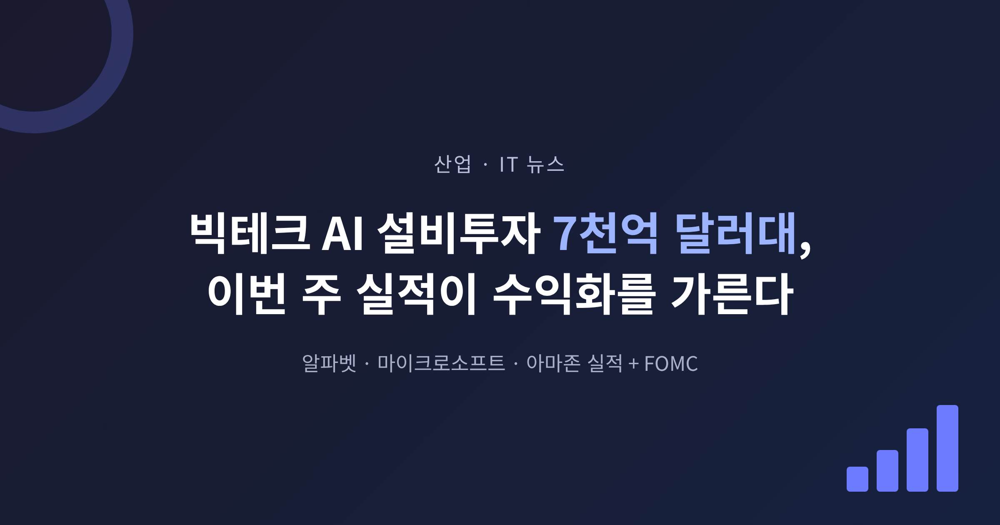
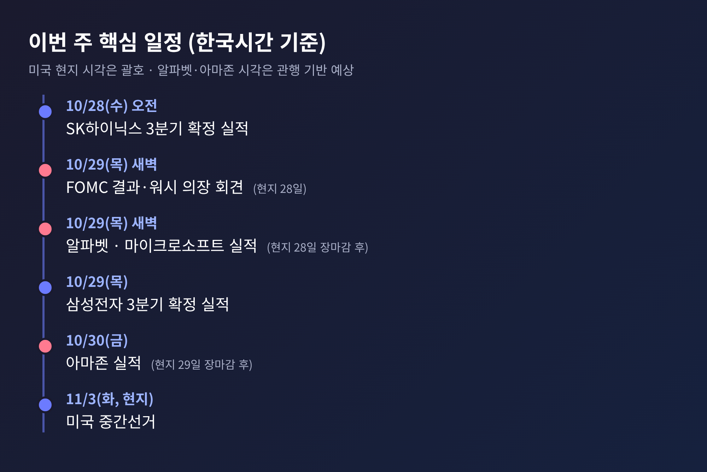
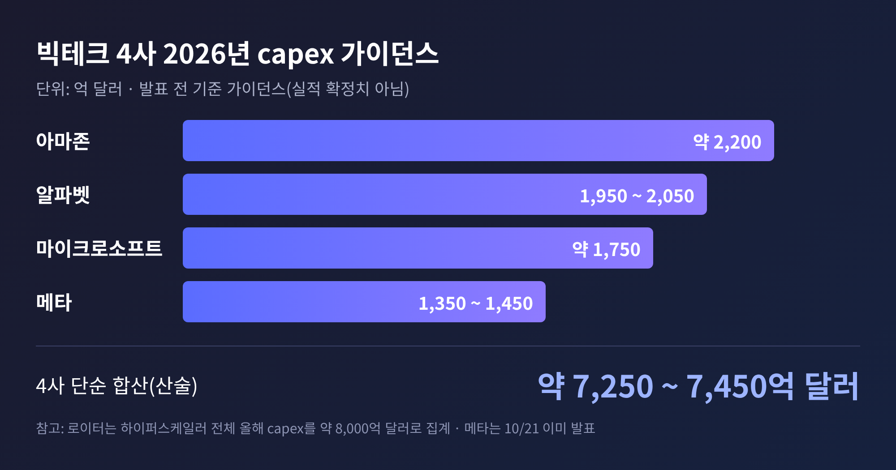
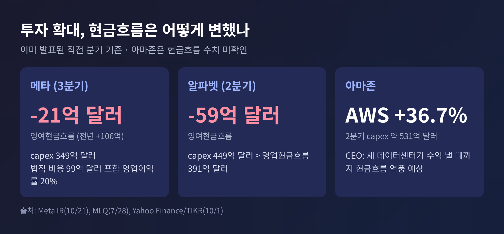
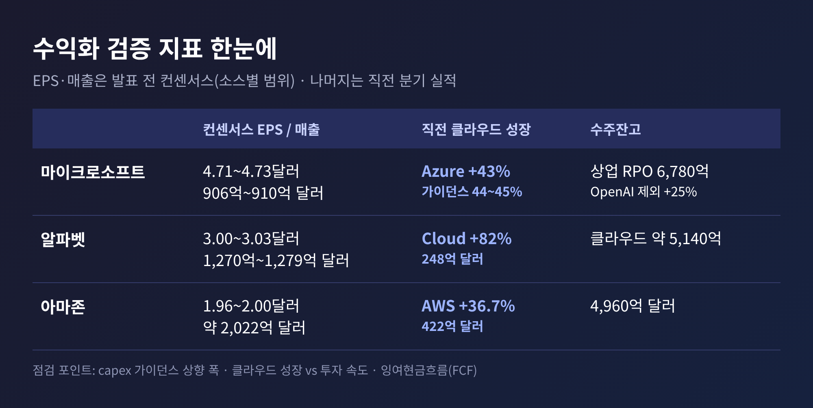
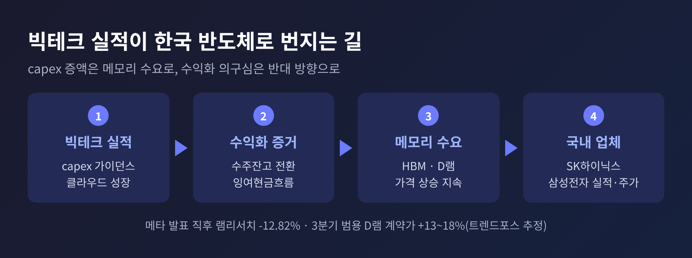

이번 글에서는 이번 주 미국 증시 '슈퍼위크'의 핵심인 빅테크 AI 설비투자와 수익화 검증을 정리해 보겠습니다.
알파벳·마이크로소프트·아마존의 3분기 실적과 FOMC가 한 주에 몰렸고, 한국에서는 SK하이닉스와 삼성전자의 확정 실적이 이어집니다.
발표 전이므로 아래 수치는 모두 확정 실적이 아닌 '컨센서스·예상'입니다.
3줄 요약
이번 주(10월 26~30일) 미국에서는 S&P500 기업의 약 3분의 1이 실적을 내놓습니다.
로이터에 따르면 이미 100여 개 기업이 발표를 마쳤고, 3분기 S&P500 이익은 전년 동기보다 32% 넘게 늘 것으로 집계됩니다(LSEG IBES).
숫자만 보면 좋은 성적표입니다. 그런데 시장의 표정은 밝지 않습니다.
계기는 지난주였습니다. 메타가 21일(현지) 3분기 실적을 내놓은 뒤 22일 주가가 9.40% 급락했고, 반도체 장비 업체 램리서치도 12.82% 떨어졌습니다.
나스닥은 6월 이후 가장 큰 일일 낙폭을 기록했습니다.
메타의 3분기 잉여현금흐름(FCF)은 마이너스 21억 달러로, 1년 전 106억 달러 흑자에서 돌아섰습니다.
정확히 짚어 둘 점이 있습니다. '빅테크 4사 실적 주간'이라는 표현이 눈에 띄지만, 메타는 이미 발표를 마쳤습니다.
이번 주 무대에 오르는 곳은 알파벳, 마이크로소프트, 아마존 세 곳입니다.
메타는 '먼저 맞은 매'이자 나머지 세 곳의 반응을 가늠할 기준선이 된 셈입니다.

2026년 capex 가이던스를 회사별로 모으면 이렇습니다.
네 곳을 단순 합산하면 약 7,250억~7,450억 달러입니다. 회사별 집계 기준이 달라 어디까지나 산술 합계입니다.
로이터는 하이퍼스케일러 전체 올해 capex를 약 8,000억 달러로 봅니다. 두 숫자의 차이는 집계 대상의 차이로 보이나, 소스에 산출 근거가 없어 확인되지는 않았습니다.
흥미로운 대목이 있습니다. 아마존의 앤디 재시 CEO는 capex 상향 이유로 '메모리 비용 상승'을 직접 꼽았습니다.
투자 확대분의 일부가 물량이 아니라 단가 인상이라는 뜻입니다. 반도체 업체에는 반가운 신호이고, 빅테크에는 부담입니다.

투자 계획만으로 주가가 버티던 시기는 지났다는 것이 월가의 공통된 진단입니다.
글로벌이코노믹이 전한 운용업계 관계자들의 말도 같은 맥락입니다. 지속 가능한 수익을 보여 주지 못하면 단기 밸류에이션 조정이 불가피하다는 것입니다.
그래서 이번 주에는 아래 세 가지가 점검 대상입니다.
첫째, 클라우드 성장률이 투자 속도를 따라가는가.
마이크로소프트는 애저(Azure) 성장률 가이던스를 항상환율 기준 44~45%로 제시했고, 직전 분기 실적은 43%였습니다.
일부 애널리스트는 47% 안팎을 기대한다는 보도도 있습니다.
알파벳의 구글 클라우드는 2분기에 248억 달러, 82% 성장을 기록했습니다.
아마존 AWS는 422억 달러, 36.7% 성장이었습니다.
둘째, 수주잔고가 매출로 바뀌는가.
2분기 기준 잔고는 마이크로소프트 상업 RPO 6,780억 달러(전년 대비 84% 증가, OpenAI 제외 시 25%), 알파벳 클라우드 약 5,140억 달러, 아마존 4,960억 달러입니다.
쌓인 주문이 실제 매출이 되는 속도가 관건입니다. 마이크로소프트의 증가율이 OpenAI 계약 덕분이라는 점도 함께 읽어야 합니다.
셋째, 현금흐름이 버티는가.
알파벳은 2분기 capex가 449억 달러로 영업현금흐름 391억 달러를 넘어서 FCF가 마이너스 59억 달러였습니다.
아마존은 재시 CEO가 새 데이터센터가 수익을 낼 때까지 현금흐름의 역풍이 있을 것이라고 밝힌 바 있습니다.
메타에 이어 알파벳과 아마존까지 현금흐름이 흔들린다면, 시장은 '투자 정점'이 아니라 '투자 부담'으로 읽을 수 있습니다.


컨센서스도 확인해 두겠습니다. 모두 발표 전 예상치이며 매일 바뀝니다.
예상치를 넘는 것은 기본이고, 숫자의 질이 중요합니다. 예전에는 실적이 예상을 웃돌면 주가가 올랐습니다.
지금은 예상을 웃돌아도 capex와 현금흐름이 마음에 들지 않으면 주가가 내려갑니다.
7월에 알파벳이 capex를 올리자 주가가 약세를 보였고, 마이크로소프트는 같은 시기 성장률 호조로 올랐던 것이 단적인 사례입니다.
이번 주가 유독 무거운 데는 금리도 있습니다.
연준은 9월에 2023년 이후 처음으로 금리를 올렸습니다. 28일 결정에서는 동결이 90% 안팎으로 반영돼 있습니다(연방기금 선물, 23일 기준).
관심은 케빈 워시 의장의 기자회견입니다. 12월 인상 확률이 약 80%(LSEG 기반)로 반영돼 있는데, CME 페드워치는 이보다 낮은 약 69%로 집계하는 등 소스마다 차이가 있습니다.
금리가 높으면 대규모 투자를 빚과 현금으로 감당해야 하는 빅테크의 자금 조달 부담이 커집니다.
실적이 좋아도 연준이 매파적 신호를 보내면 기술주 반등이 제약될 수 있다는 것이 국내 증권가의 분석입니다.
29일에는 9월 PCE 물가와 3분기 GDP 속보치가, 11월 3일에는 미국 중간선거가 이어집니다.
빅테크의 capex는 곧 메모리 업체의 매출입니다. 한국 시간으로 28일 SK하이닉스, 29일 삼성전자가 확정 실적을 내놓습니다.
SK하이닉스의 증권사 컨센서스는 매출 96조6,633억원, 영업이익 75조9,712억원입니다.
삼성전자는 이미 잠정 실적(매출 195조원, 영업이익 107조4,000억원)을 공개했고, 이번에 사업부별 내역과 가격 코멘트가 나옵니다. 두 회사 합산은 약 183조원 수준입니다.
세부 내용은 앞선 글에서 다뤘으므로 여기서는 연결 고리만 짚겠습니다.
트렌드포스는 3분기 범용 D램 계약가격이 전 분기보다 13~18% 오르고, 4분기에도 10~15% 더 오를 것으로 추정합니다.
SemiAnalysis는 올해 하이퍼스케일러 capex에서 메모리가 차지하는 비중이 약 30%로, 2023~24년의 약 8%에서 크게 높아졌다고 4월에 추정했습니다.
HBM은 2027년까지 공급이 부족할 것이라는 전망도 함께 내놨습니다.
이 구조에는 양면이 있습니다. 빅테크가 capex를 더 올릴수록 메모리 업체의 실적은 좋아집니다.
반대로 수익화가 의심받아 capex 증액에 제동이 걸리면, 그 충격도 메모리 업체가 먼저 받습니다.
메타 발표 직후 램리서치가 12.82% 급락한 것은 그 연결이 이미 시장에서 작동하고 있다는 증거입니다.

시나리오는 크게 둘로 나뉩니다. 어디까지나 필자의 정리이며 예측이 아닙니다.
실제로는 두 가지가 섞여 나올 가능성이 큽니다. 회사마다 사정이 다르고, 시장 반응도 숫자 하나가 아니라 가이던스의 어조에 좌우되기 때문입니다.
알파벳과 마이크로소프트의 발표가 한국 시간 29일 새벽에 나오는 만큼, 같은 날 열리는 삼성전자 실적 발표와 국내 증시 반응이 첫 시험대입니다.
정리하면 이렇습니다.
이번 주의 질문은 '얼마를 쓰는가'가 아니라 '쓴 만큼 돌아오는가'입니다.
빅테크가 그 답을 내놓는 순간, AI 랠리는 기대의 시장에서 증거의 시장으로 넘어갑니다. 그 답이 어느 쪽일지는 이번 주 숫자가 말해 줄 것입니다.
본 글은 공개된 보도와 기업 자료를 바탕으로 한 정보 제공용 해설이며, 특정 종목의 매수·매도를 권유하는 투자 권유가 아닙니다. 투자 판단과 그에 따른 책임은 투자자 본인에게 있습니다. 문중 수치는 발표 전 컨센서스·예상치로, 확정 실적과 다를 수 있습니다.
참고 출처 뉴스핌(2026-10-26, 로이터 번역), 이투데이(2026-10-26), 뉴스톱(2026-10-26), 글로벌이코노믹(2026-10-26), 이비엔뉴스(2026-10-25), Reuters/Investing.com(2026-10-25), Sentisense(2026-10-25), Mitrade(2026-10-26), Meta IR(2026-10-21), MLQ.ai(2026-07-28), Yahoo Finance/TIKR(2026-10-01), 포인트데일리(2026-10-26), Tom's Hardware(2026-04-03) 등